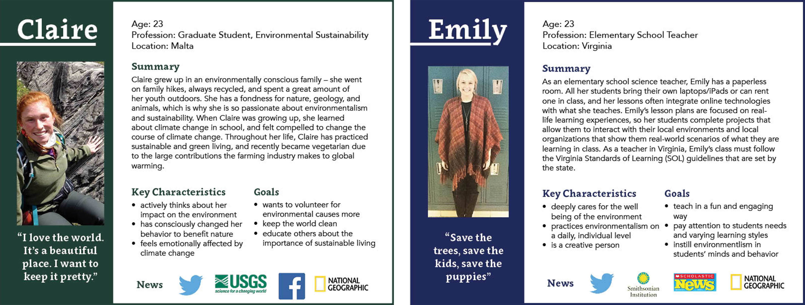
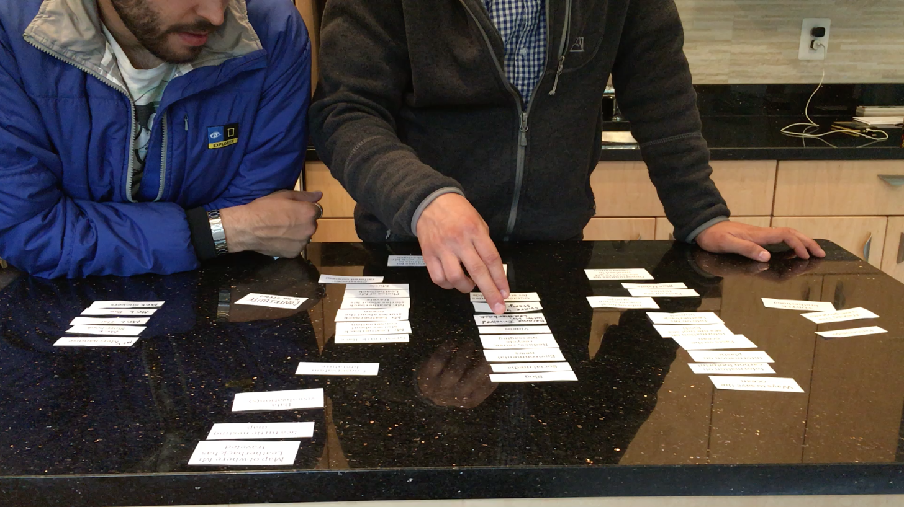
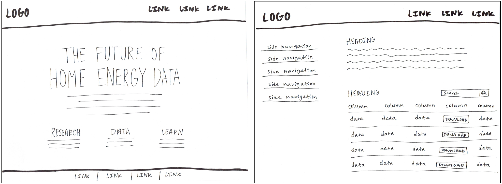
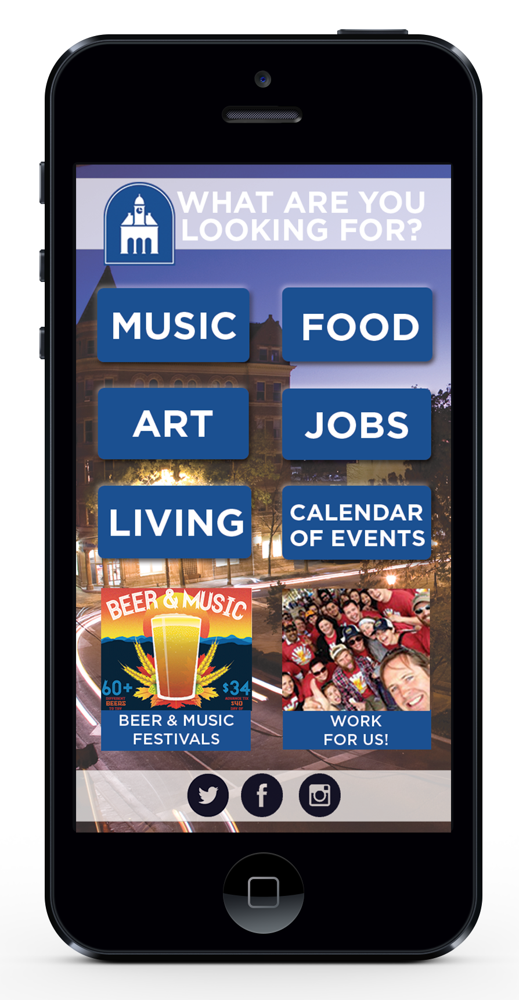
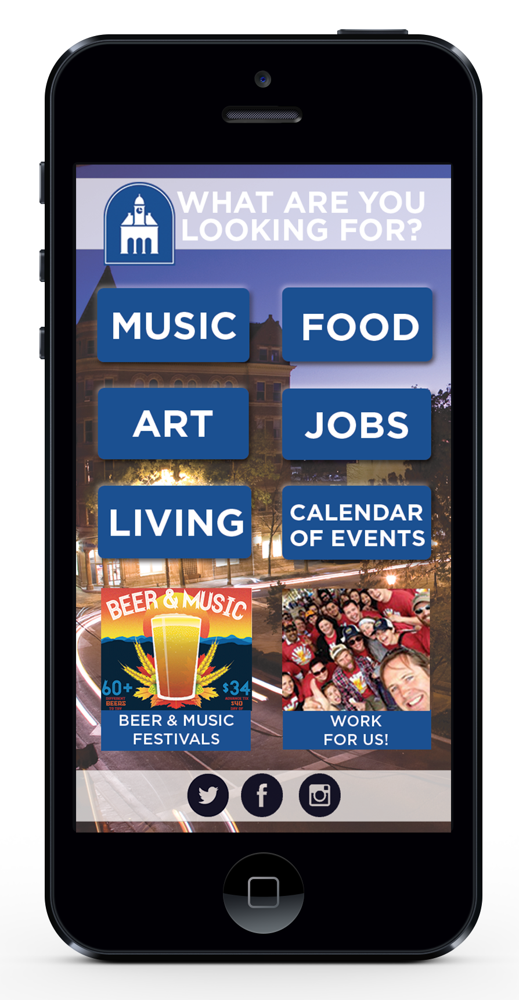
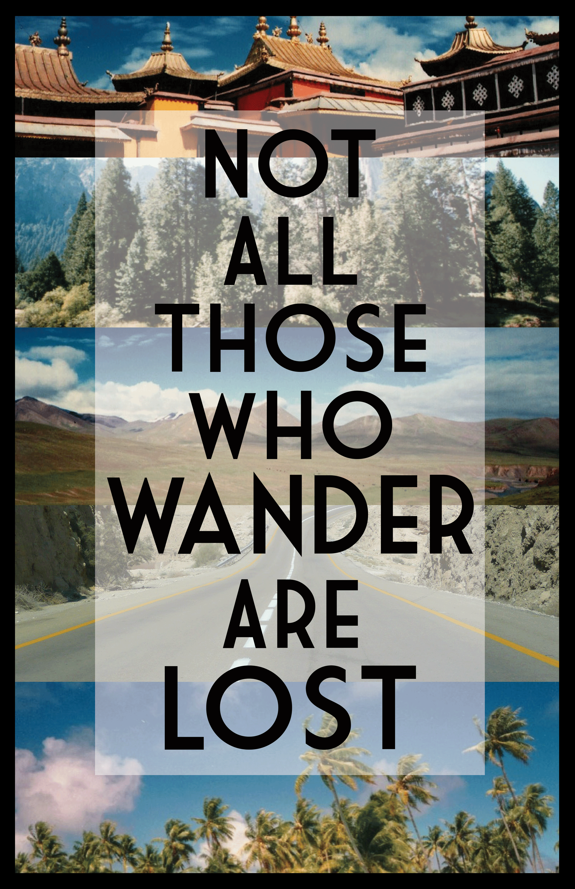
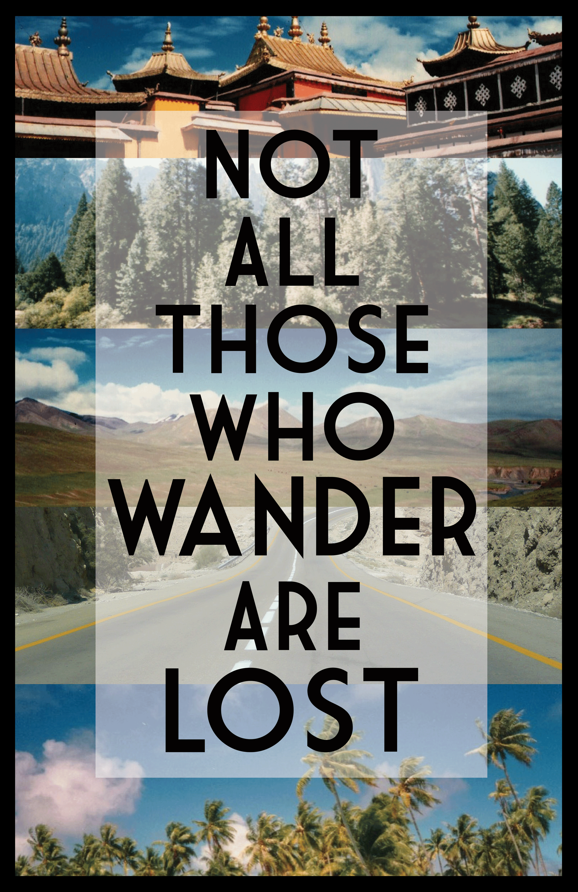

Interface with clients to scope, plan, and execute projects using agile methodology. Assess client needs through stakeholder interviews, user research, and persona identification. Create wireframes and high fidelity prototypes, and determine functionality of products through in-person and online usability testing. Implement human-centered design thinking practices across all multi-disciplinary projects.
Web Project Manager
Operation Lifesaver
August 2015 - January 2016
Manage project prioritization and completion between OLI and their web vendor. Troubleshoot web solutions and provide feedback for improvements. Create simple solutions to communication issues between OLI volunteers and OLI staff.
Web Content Manager
CEB
August 2015 - December 2015
Migrate content from current website into Adobe Experience Manager (AEM) at a rate of 15-20 pages per day. Document CMS bugs and work with the team to troubleshoot those issues. Learn and follow CEB’s branding and SEO guidelines.
Front End Web Developer
JMU Technology & Design
August 2014 - May 2015
Built and maintained University Unions websites using Wordpress. Advised clients on project feasibility and completion. Served as UI/UX designer for web team projects. Collaborated with graphic designers to create mockups for website redesigns.
My name is Radhika. I'm currently a front end web developer and UX designer with the Department of Commerce Data Service. I work with a team of developers, data scientists and technologists focused on applying user-centered design and agile methodologies to the process of data insight and product creation. As a UX designer, I am responsible for conducting stakeholder & client interviews, gathering user research, developing personas, sketching wireframes, designing high-fidelity prototypes, and executing usability testing. I make sure all of our products are built with users in mind. As a front end developer, I work in sprints with the rest of my team to implement tasks in an agile manner. I code mostly in HTML, CSS, & Javascript, using Bootstrap as a framework.
I am passionate about social issues, design, and community engagement. I think a lot about creating solutions to big problems, and I truly believe that can be done through community collaboration and human-centered design. I am an advocate for increasing the number of women and people of color in tech, and I strive to create inclusive spaces wherever I go.
Accomplishments
Recipient, 2016 DCFemTech Powerful Female Designer Award
Organizer & moderator, Diversity & Inclusion Around Open Data Panel, The White House
Participant, White House Open Data User Engagement Series
Instructor, Commerce Data Academy, Introduction to Design & Photoshop
Graduate, General Assembly User Experience Design part-time course
Graduate, Design Thinking DC Summer of Design program
Mr. Leatherback is a grassroots education program, run by a conservationist dressed in a leatherback sea turtle suit who travels around the world organizing educational programs about sea turtle and ocean conservation with local communities. Mr. Leatherback is a program, but more importantly, is a character that has come to life through the creators' efforts in creative storytelling. For this project, I worked with the client, Oceanic Society, to identify problems, needs, and goals regarding Mr. Leatherback.
The Problem
Mr. Leatherback is a wealth of environmental knowledge and activism, but not many people know about him. I focused on solving the following problems for the client:
Identifying target audiences for Mr. Leatherback content
Sorting all content into an organized manner
Creating a single platform through which Mr. Leatherback content can be shared with an audience
The Process
Stakeholder Interview
User Research
Persona Identification
Card Sorting
Feature Prioritization
Wireframing and Prototyping
User Testing
Stakeholder Interviews
During the stakeholder interview, I asked questions broad questions to understand the underlying goals the Oceanic Society had for Mr. Leatherback. It became clear to me that Mr. Leatherback was not just a simple character they had created - they believed that Mr. Leatherback had the ability to create actionable change within individuals, which can lead to a better protected ocean. I focused on the following quotes from the client to move forward with the project.
"Mr. Leatherback is a voice for the ocean and marine wildlife"
"We want to inspire people to change their individual actions, and know that they can be the change"
"Mr. Leatherback makes conservation fun"
"We have so many images, blog posts, news, videos, and content!"
"Mr. Leatherback already has a global audience, but no way to communicate with them"
User Research & Persona Identification
When conducting user research, I interviewed 10 individuals from various walks of life. From there, I identified 5 main user groups that Mr. Leatherback would appeal to: students, teachers, environmental enthusiasts, turtle lovers, and kids. For the MVP, I chose to focus on two personas.

Card Sorting & Feature Prioritization
After identifying personas, I conducted an open card sort with the client to identify the information architecture for the site. From card sorting, I was able to group the content the client had, but in order to create an MVP I conducted feature prioritization in order to set the standards for the first deliverable.

Wireframing & Prototyping
Next, I sketched out my ideas, created wireframes using the Sketch App, and put the wireframes into InVision App to conduct usability testing. After receiving valuable feedback from in-person and online usability testing, I iterated on the designs and improved some key features. I created an InVision interactive prototype that I presented to the client.
Purpose: One of my first projects when I joined the Commerce Data Service was to better design our own website to include information on who we were, what we did, and what projects we were working on as a team. I served as a designer and developer on this project, and worked with the dev team to implement my designs. I created the design for the website and created custom icons for our services as well. Additionally, I conducted in-person and remote usability testing on the website to see if users were able to find information on the site.
The National Institute for Standards in Technology (NIST) runs a Net Zero Energy Residential Test Facility (NZERTF) that is a laboratory for conducting research on energy efficiency. The facility is a four-bedroom house that produces all of its own energy while sending excess energy back to the electrical grid, and was built to be a model for the American home of the future.
The goal is to have developers, businesses, startups, and products use Net Zero data to inform and create projects focused around renewable energy. The use of this data has the potential to educate Americans on energy usage in their homes, save Americans money on energy expenses, and improve the energy economy to match the demand for products that are sustainably produced and cost effective.
The Problem
NIST collects valuable data on energy use produced from the house, but did not have a way for the general public to access and use that data for research and product development.
On this project, I served as a designer and developer to help NIST launch a data portal which shared NetZero Housing data with the public. I worked with another developer and data scientist to launch the tool.
The Process
Stakeholder Interviews
Sketching & Wireframing
Front End Development
Stakeholder Interviews
I conducted stakeholder interviews to understand the potential users and use cases of the data. I was able to identify these main user groups: data engineers, developers, and tech startups.
Sketching & Wireframing

Front End Development
After going over designs with the rest of the team, I built a page template to serve as the basis for all pages of the website, using HTML, CSS, Javascript, and the Bootstrap framework. I collaborated with my team using Git & Github.
Purpose: For this site, I worked closely with the Academy of Science coordinators and assessed their needs, built a website skeleton, and taught them how to add content within WordPress. I worked closely with the client to ensure their needs were being met, and that they were satisfied with the progress and outcome of the project.
Client feedback:“We’ve gotten lots of feedback on our VJAS/VAS summer conference website from the executive committee members of those organizations. To say they’re impressed with the professional look and feel of it would be an understatement. It is, hands down, the best website any university hosting this event has ever put together.” –Jeremy Hawkins, Assistant Director, JMU Conference Services
Purpose: Shout Out! JMU, a feminist consciousness raising blog on campus, had an out of date logo and website. In an internship with the Women’s & Gender Studies department, I redesigned the logo and website for the class. I updated the class WordPress account and activated a new theme, and customized the navigation and content structure on the website. I then taught all the bloggers how to best utilize the new theme, and created a guide for future users as well.
Purpose: In SMAD 308, Advanced Interactive Design for the Web, our assignment was to create a mockup for a microsite redesign, specifically targeting college students. I chose to redesign the Harrisonburg Downtown Renaissance website, a website that contains information on events and happenings in downtown Harrisonburg, Virginia. I created this mockup for desktop and mobile users, and chose to design the website in a way that would appeal to college students within Harrisonburg, and outside of the city.
Tools Used: Adobe Photoshop, moqups.com
Post Meridian
Graphic Design, Branding
Purpose: I designed this logo and album art for the Charlottesville-based band, Post Meridian. Once their album art was created, I customized their Bandcamp and Facebook pages to unify their online presence.
Purpose: Through my position as Graphic Designer at University Program Board, I was responsible for creating posters, web banners, social media graphics, and handbills to advertise monthly concerts. This is an example poster I designed for the band, Little Daylight, and there are matching web banners and other graphics to match the poster.
Tools Used: Adobe Photoshop
Posters
Graphic Design
These are a few posters I have designed for friends.


 



 
